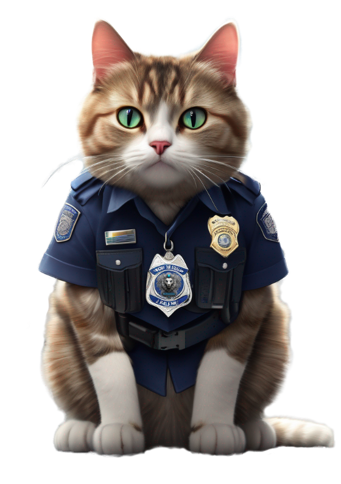

СЕРДЦЕМ К СЕРДЦУ, ЛАПКОЙ К РУКЕ - ВМЕСТЕ СОЗДАЕМ МИР БЕЗ ОБМАНА
Верность животных возможна из-за нашей честности
Зоо Комисар – за прозрачное завтра!


ШАНОВНІ ДРУЗІ І ОДНОДУМЦІ!
Ми представляємо організацію "ЗооКомісар" - наша мета боротьба проти шахрайства та недобросовісної діяльності серед волонтерів та компаній з захисту тварин, а також виявлення жорстоких вбивць тварин.
Якщо вам відома будь-яка інформація, ви можете залишити заявку через нашого телеграм-бота

ХТО МИ?
Ми — команда фахівців та активістів, багато з яких мають досвід роботи у органах влади. Наша мета — використовувати цей досвід, щоб стежити за недобросовісною діяльністю та зміцнити довіру до чесних і щиро прагнучих допомагати організацій

ЧОМУ ЦЕ ВАЖЛИВО?
Було виявлено зловживання довір'ям тими, хто щиро допомагає тваринам. Ми тут, щоб слідкувати, щоб благородна місія захисту тварин не була зіпсована недоброчесними людьми

КОГО МИ ШУКАЄМО?
Активістів, особливо серед колишніх працівників органів влади, які готові внести свій внесок у нашу діяльність. Людей з добрими серцями, готових підтримати нас морально та матеріально. Інформацію про будь-які підозрілі дії чи випадки шахрайства.

ЯК З НАМИ ЗВ'ЯЗАТИСЬ?
Якщо ви поділяєте цінності та становите частину "ЗооКомісар", зв'яжіться з нами за нашими [адресами електронної пошти/номером телефону/соціальними мережами].
НАША ІДЕОЛОГІЯ
Наша ідеологія ґрунтується на принципах інновацій, співпраці та відповідальності. Ми віримо, що лише через постійний розвиток та впровадження нових ідей можна досягти успіху

ОСНОВНА МЕТА
"ЗооКомісар" бере участь у створенні чесної, прозорої та відповідальної спільноти волонтерів та інвесторів у сфері захисту тварин, де кожен ресурс спрямований виключно на добро тварин.

ПРОФЕСІОНАЛЬНИЙ ПІДХІД
Ми застосовуємо строгі методи перевірки та контролю для протидії шахрайству та злочинності.

ОБ'ЄДНАННЯ ОДНОДУМЦІВ
Ми віримо у силу групової співпраці. Запрошуємо до співпраці активістів та порядних людей, і розраховуємо на колективну роботу в охороні прав тварин.

ПРОЗОРІСТЬ ТА ВІДПОВІДАЛЬНІСТЬ
Для нас важливо, щоб кожен потік допомоги був видимим і зрозумілим. Наша діяльність та фінансування підлягають громадському контролю.

ПОВАГА ДО ТВАРИН
У центрі нашої ідеології — безумовна повага до адаптації та життя тварин. Наша місія — досягнення, яке ставить їх добробут на перше місце.

ОСВІТА ТА ПРОСВІТА
Ми активно працюємо над поширенням інформації, навчанням та просвітою населення, охопленням та способами протидії шахрайству у сфері допомоги тваринам.

ПАРТНЕРСТВО ТА СПІВПРАЦЯ
"ЗооКомісар" шукає та розвиває партнерські відносини з іншими організаціями та окремими особами, які поділяють нашу місію та цінності.

НЕПЕРЕРВНИЙ РОЗВИТОК
Ми не зупиняємося на досягнутому і завжди шукаємо можливості для вдосконалення та зростання
ПАРТНЕРСТВО
Співпраця з різними організаціями для досягнення спільних цілей
ОСВІТНІ ПРОЕКТИ
Співпраця з навчальними закладами, організація лекцій та семінарів для студентів ветеринарних та юридичних спеціальностей. Це допоможе розширити обізнаність про проблеми шахрайства в галузі благодійності
ПАРТНЕРСТВО З ПРИТУЛКАМИ
Проведення аудиту та консультацій для притулків з покращення їх роботи, збільшення прозорості та ефективності
СПІВПРАЦЯ З КОРПОРАЦІЯМИ
Багато компаній зацікавлені у соціальній відповідальності. "Зоо Комісар" може запропонувати корпоративним партнерам програми спонсорства або допомоги тваринам
ІНТЕГРАЦІЯ З ОНЛАЙН-ПЛАТФОРМАМИ
Співпраця з платформами краудфандингу або благодійними сайтами для моніторингу та верифікації кампаній на чесність
ПАРТНЕРСТВО З ВЕТЕРИНАРНИМИ КЛІНІКАМИ
Знижки або спеціальні умови для тварин, врятованих через перевірені благодійні фонди

ПОДІЇ З ВІДОМИМИ ОСОБИСТОСТЯМИ
Організація благодійних заходів або кампаній з участю знаменитостей, які підтримують вашу місію
ТЕХНОЛОГІЧНІ ПАРТНЕРСТВА
Розробка мобільних додатків або онлайн-сервісів, які допоможуть контролювати та відстежувати потоки пожертв
СПІВПРАЦЯ З МІСЦЕВИМИ ВЛАДАМИ
Робота з місцевими органами влади для створення та зміцнення законів та нормативів, що регулюють благодійну діяльність у захисті тварин
ПАРТНЕРСТВО З МЕДІА
Регулярне інформування про актуальні проблеми та досягнення організації через пресу, радіо, телебачення та онлайн-медіа
СПІВПРАЦЯ З ДИЗАЙНЕРАМИ ТА ВИРОБНИКАМИ
Створення тематичної продукції (футболки, аксесуари, сувеніри), частина виручки від продажу якої буде спрямована на підтримку "ЗооКомісар"
РЕКВІЗИТИ
Ви можете підтримати наш проект та надіслати будь-який донат за нашими реквізитами
ФОП NAME NAME NAME
Код ЄДРПОУ:
0000000000
IBAN:
UA000000000000000000000000000

